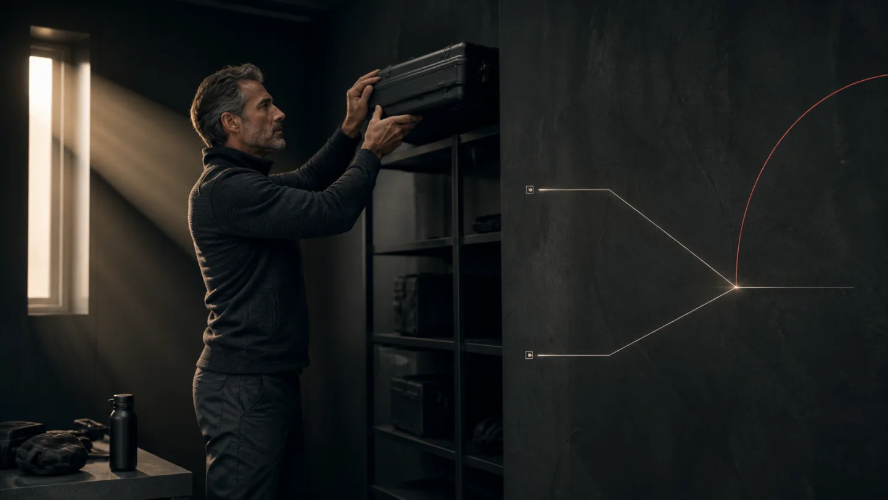

Персональная медицина для долголетия
Дольше жить
В полной силе
Вы увидите, с чего начать и почему именно с этого. Врач оценит вес, состояние сердца и гормональное здоровье. Специалист по сопровождению поможет встроить первый шаг в повседневную жизнь с учётом сна и движения.
Получить персональный план чек‑апаДоступные программы
Пять программ для долгой жизни в полной силе
Персональный чек‑ап
Сразу видно, что изменит больше всего
Цель, анализы, самочувствие и образ жизни складываются в одну картину. На первом месте оказывается шаг с наибольшей ожидаемой пользой, а не самый модный тест или препарат.
- 01Что хочется вернутьЭнергия, движение, сон, уверенность в теле
- 02Что влияет сильнееВес, сердце, гормональные сигналы и образ жизни
- 03С чего начатьОдин шаг с наибольшей ожидаемой пользой
- 04Как войдёт в жизньДействия, которые помещаются в обычную неделю
- 05Что станет видноОтвет организма и следующий выбор
Longevity
Больше будущего
Больше себя в нём
Longevity может начинаться со снижения веса, сердца, сна, силы или гормонального здоровья. Общая оценка показывает, где скрыт наибольший резерв. Новые медицинские идеи получают отдельный разбор по их реальному потенциалу.
Собрать персональный чек‑апПервый набор
Вернуть энергию, ясность и полную силу

Мужское гормональное здоровье Снова на полной мощности Врач сопоставит энергию, ясность, выносливость и сексуальное желание с гормональными сигналами и подберёт способ вернуть больше сил Хочу в первый набор ↗ Женское гормональное здоровье Снова собойВ полную силу Сон, энергия, настроение, ясность и близость складываются в личную картину, чтобы подобрать способ вернуться в полную силу Хочу в первый набор ↗
Практические разборы
Ответ целиком, чтобы действовать точнее
Два разбора открыты полностью: практический рацион при меньшем аппетите и честная карта исследований фисетина — от клеток и мышей до первых данных у людей.

Как собрать рацион, когда препарат уменьшил аппетит
Две крайности, белок без магической цифры, сила, талия и план на период после отмены.
Читать полный разбор ↗Фисетин и клетки, которые перестали делиться
Как сильная лабораторная гипотеза дошла до клиник Mayo, что уже увидели у людей и чего пока не знают.
Разобраться по данным ↗Когда всё сходится
Рекомендация становится действием
Действие становится вашей жизнью
Личный следующий шаг
Выбрать лучший следующий шаг
Свяжитесь с нами, чтобы прояснить свою ситуацию и получить персональный план чек‑апа или подходящую программу.